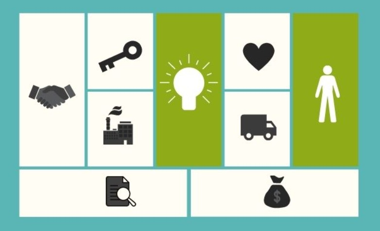

<div class="container mt-4">
    <div class="card shadow-lg border-0 rounded">
      <div class="row g-0">
        <!-- Imagen -->
        <div class="col-md-4">
          
        </div>
        <!-- Contenido -->
        <div class="col-md-8">
          <div class="card-body">
            <h2 class="card-title text-center text-primary">¿En qué consiste el Modelo Canvas?</h2>
            <p class="card-text mt-3">
              El <span class="fw-bold text-success">Modelo Canvas</span> es una herramienta estratégica visual que se utiliza 
              para diseñar, analizar y desarrollar modelos de negocio. Fue creado por <span class="fw-bold">Alexander Osterwalder</span> 
              y su objetivo principal es proporcionar una visión clara y estructurada de los elementos clave que 
              conforman un negocio, permitiendo identificar áreas de mejora y oportunidades.
            </p>
            <h5 class="mt-4 text-secondary">Elementos clave del Modelo Canvas:</h5>
            <ul class="list-group list-group-flush">
              <li class="list-group-item">
                <strong class="text-info">1. Segmentos de clientes:</strong> grupos de personas o empresas a los que va dirigido el negocio.
              </li>
              <li class="list-group-item">
                <strong class="text-info">2. Propuesta de valor:</strong> beneficios únicos que el negocio ofrece a sus clientes.
              </li>
              <li class="list-group-item">
                <strong class="text-info">3. Canales:</strong> medios a través de los cuales se entregan los productos o servicios.
              </li>
              <li class="list-group-item">
                <strong class="text-info">4. Relación con clientes:</strong> estrategias para atraer y fidelizar clientes.
              </li>
              <li class="list-group-item">
                <strong class="text-info">5. Fuentes de ingresos:</strong> formas en que el negocio genera ingresos.
              </li>
              <li class="list-group-item">
                <strong class="text-info">6. Recursos clave:</strong> activos esenciales para que el negocio funcione.
              </li>
              <li class="list-group-item">
                <strong class="text-info">7. Actividades clave:</strong> tareas principales necesarias para cumplir la propuesta de valor.
              </li>
              <li class="list-group-item">
                <strong class="text-info">8. Socios clave:</strong> alianzas estratégicas que fortalecen el negocio.
              </li>
              <li class="list-group-item">
                <strong class="text-info">9. Estructura de costos:</strong> costos asociados a la operación del modelo de negocio.
              </li>
            </ul>
            <p class="card-text mt-3">
              Este modelo se representa en un lienzo dividido en las <span class="fw-bold text-danger">9 áreas clave</span>, 
              facilitando su comprensión y visualización. Es ampliamente utilizado en startups y empresas consolidadas para 
              la planificación estratégica y el análisis de negocios existentes.
            </p>
          </div>
        </div>
      </div>
    </div>
  </div>
  